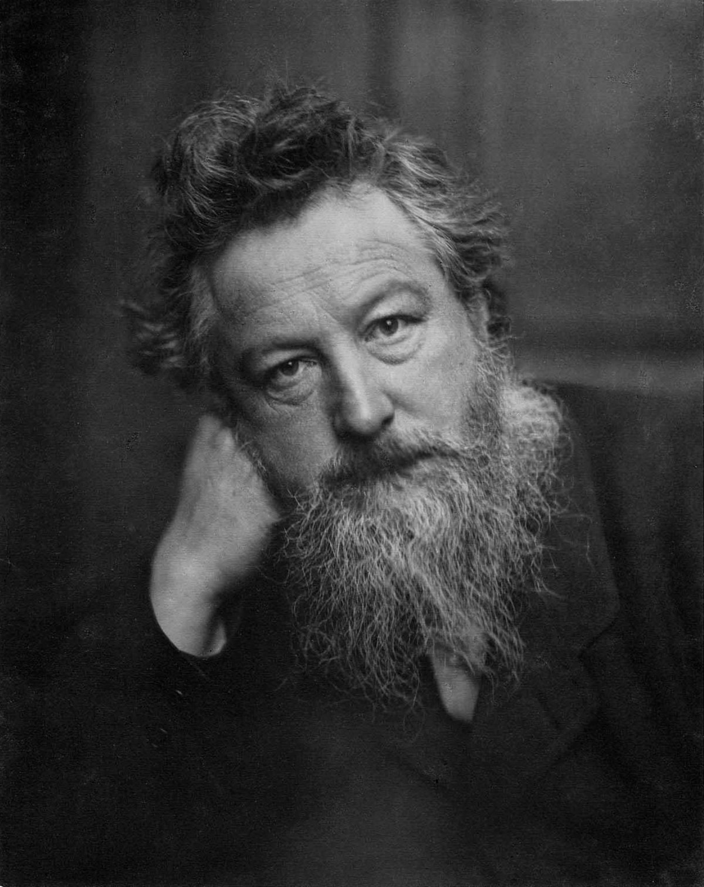

William Morris
William Morris buvo anglų tekstilės dizaineris, poetas, menininkas, rašytojas ir aktyvistas, susijęs su Didžiosios Britanijos Menų ir Amatų Judėjimu. Jis buvo svarbus tradicinių britų tekstilės menų ir gamybos metodų atgaivinimo dalyvis.
William Morris galerija